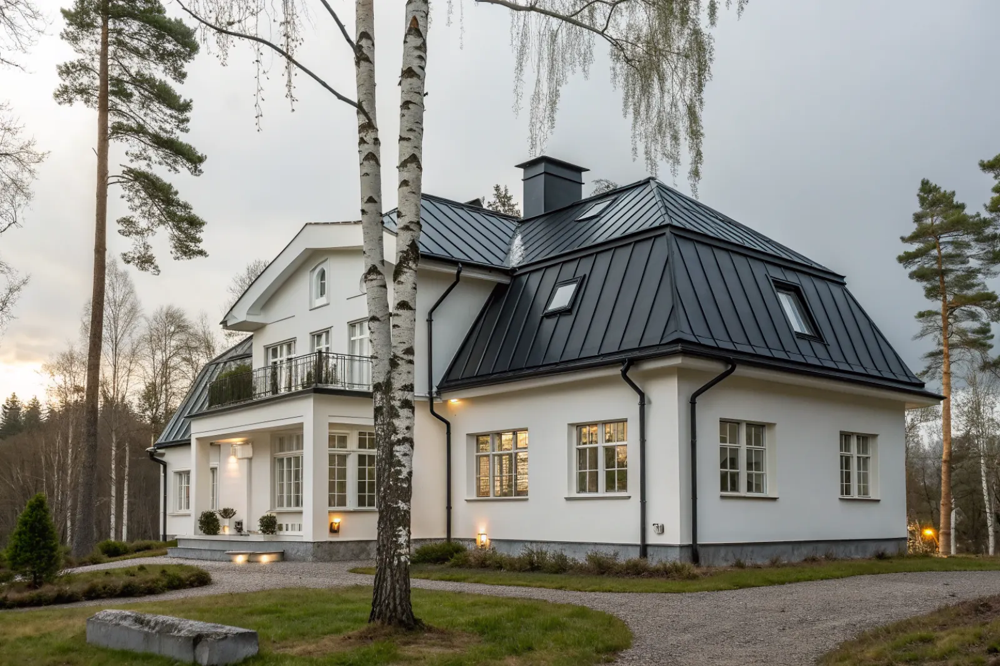

Bromma
Funkisvillor med låga plåttak.
Bromma →Plåttak är ett populärt val i Stockholm tack vare låg vikt, lång livslängd och rent uttryck. Vi utför nytt plåttak, bandtäckning och plåtdetaljer med precision i skarvar, beslag och avvattning.
Plåttak har låg vikt, tål temperaturväxlingar bra och passar även på lägre taklutningar där pannor inte fungerar. Rätt utfört ger det en tät konstruktion som är enkel att underhålla.
Samtidigt ställer plåtarbeten höga krav på precision – små fel i infästning eller skarvar kan ge läckage eller korrosion över tid. Jämför material i tegel vs betong vs plåt.

Vi hjälper både dig som vill installera nytt plåttak och fastighetsägare som behöver renovera ett befintligt system. I varje projekt tittar vi på taklutning, avvattning och detaljlösningar.
Har plåttaket börjat rosta kan takmålning vara ett alternativ när konstruktionen fortfarande är sund.
Bandtäckning, även kallad falsat plåttak, är den klassiska metoden: långa plåtband som fogas ihop med dubbelfals direkt på råsponten. Den ger ett slätt, stilrent tak, fungerar ner till mycket låga lutningar och passar äldre hus och funkisvillor. Bandtäckning läggs av plåtslagare och tar längre tid, men håller mycket länge.
Profilplåt (till exempel trapetsprofil eller pannprofil) levereras i färdiga skivor som skruvas fast. Den är snabbare att montera och oftast billigare, och passar många villor och komplementbyggnader. Skruvarnas gummibrickor behöver ses över med åren.
Vilket som passar beror på husets stil, lutning och budget. Mer om den klassiska metoden finns i falsat plåttak och bandtäckning.
Äldre falsade plåttak från 1950–70-talet läcker oftast vid falsarna, vid skorstenen och vid genomföringar. Plåten kan vara frisk men falsarna ha öppnat sig av rörelser och frost. Då kan taket tätas genom att falsarna efterfalsas och tätas och skadade partier byts.
Är plåten frisk men färgen sliten är takmålning ett bra nästa steg efter tätningen. Är plåten genomrostad på flera ställen blir nytt plåttak mer lönsamt.
Många väljer att gå från betong- eller tegelpannor till plåt vid takbyte, eftersom plåt är lättare och kräver mindre underhåll. Lägre vikt avlastar takstolarna på äldre hus.
Sedan 1 december 2025 kräver byte av takmaterial på villa och radhus normalt inget bygglov. Undantaget är hus med skyddsbestämmelser och särskilt värdefulla miljöer – där krävs lov, så stäm av med kommunen – läs mer i bygglov för takbyte.
Priset beror på takets yta och form, valet mellan bandtäckning och profilplåt, plåtkvalitet och kulör, antal genomföringar och kupor samt ställningsbehov. Bandtäckning kostar mer än profilplåt men har lång livslängd.
Vi publicerar inga fasta priser. Vi kommer ut gratis och lämnar ett skriftligt kostnadsförslag där alternativen står sida vid sida.
Arbetskostnaden för plåttak och plåtarbeten på villa ger ROT-avdrag. Vi gör avdraget direkt på fakturan. För 2026 är ROT-avdraget 30 % av arbetskostnaden, med ett tak på 50 000 kr per person och år. Läs mer i vår guide om ROT-avdrag för takarbete.
Funkisvillor med låga plåttak.
Bromma →Stora villor med falsad plåt.
Danderyd →Havsnära tak och korrosionsskydd.
Lidingö →Kustnära tak i Saltsjöbaden.
Nacka →Låglutande tak i Bergshamra.
Solna →Plåtdetaljer på radhus och villor.
Sundbyberg →Klassiskt plåttak för låga lutningar.
Falsat plåttak & bandtäckning →Underhåll och nytt ytskydd.
Måla plåttak →Så länge håller plåt, tegel och betong.
Livslängd per takmaterial →Salt havsluft ställer extra krav på plåt.
Plåttak på Lidingö →